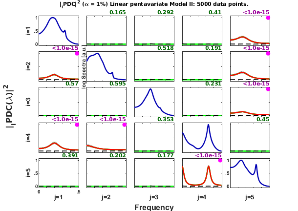

SCHELTER ET AL.(2006) - 5-dimension VAR[4]
An example taken from Schelter et al. (2006)
==========================================================================
Schelter, Winterhalder, Hellwig, Guschlbauer, Lucking, Timmer
Direct or indirect? Graphical models for neural oscillators
J Physiology - Paris 99:37-46, 2006.
<http://dx.doi.org/10.1016/j.jphysparis.2005.06.006>Example 5-dimension VAR[4] ==========================================================================
Contents
See also: mvar, mvarresidue, asymp_pdc, asymp_dtf, gct_alg,
igct_alg, xplot, xplot_pvalues
% (C) Koichi Sameshima & Luiz A. Baccalá, 2022. % See file license.txt in installation directory for licensing terms.
Generate data sample using fschelter2006 function
clc; clear; format compact; format short nBurnIn = 5000; % number of points discarded at beginning of simulation nPoints = 5000; % number of analyzed samples points flgRepeat = 0; % You may want to repeat simulation using the same data set % with different analysis parameters. If this is the case, % run schelter2006.m with flgRepeat = 0, then set it to 1, % and you will be able to play with the same dataset using % different analysis and plotting parameters. % When flgRepeat == 0, the state number is saved in % schelter2006_state.mat file, so that randn can be % initialized with the same state number in subsequent % simulations. [u,aState] = fschelter2006(nPoints, nBurnIn, flgRepeat); % if ~flgRepeat, save schelter2006_state.mat aState; end; %chLabels = {'x_1';'x_2';'x_3';'x_4';'x_5'}; %or chLabels = []; fs = 1;
======================================================================
Schelter et al. J Physiology - Paris 99:37-46, 2006.
Linear penta-variate VAR[4]-process
x1-->x2 x1-->x4 x2-->x4 x4==>x5 x5-->x1 x5-->x2 x5-->x3
======================================================================
Data pre-processing: detrending and normalization options
flgDetrend = 1; % Detrending the data set flgStandardize = 0; % No standardization [nChannels,nSegLength]=size(u); if nChannels > nSegLength, u=u.'; [nChannels,nSegLength]=size(u); end if flgDetrend for i=1:nChannels, u(i,:)=detrend(u(i,:)); end disp('Time series were detrended.'); end if flgStandardize for i=1:nChannels, u(i,:)=u(i,:)/std(u(i,:)); end disp('Time series were scale-standardized.'); end
Time series were detrended.
MVAR model estimation
maxIP = 30; % maximum model order to consider. alg = 1; % 1: Nutall-Strand MVAR estimation algorithm; % % 2: minimum least squares methods; % % 3: Vieira Morf algorithm; % % 4: QR ARfit algorith. criterion = 1; % Criterion for order choice: % % 1: AIC, Akaike Information Criteria; % % 2: Hanna-Quinn; % % 3: Schwarz; % % 4: FPE; % % 5: fixed order given by maxIP value. disp('Running MVAR estimation routine...') [IP,pf,A,pb,B,ef,eb,vaic,Vaicv] = mvar(u,maxIP,alg,criterion); disp(['Number of channels = ' int2str(nChannels) ' with ' ... int2str(nSegLength) ' data points; MAR model order = ' int2str(IP) '.']); %========================================================================== % Testing for adequacy of MAR model fitting through Portmanteau test %========================================================================== h = 20; % testing lag MVARadequacy_signif = 0.05; % VAR model estimation adequacy significance % level aValueMVAR = 1 - MVARadequacy_signif; flgPrintResults = 1; [Pass,Portmanteau,st,ths] = mvarresidue(ef,nSegLength,IP,aValueMVAR,h,... flgPrintResults);
Running MVAR estimation routine...
maxOrder limited to 30
IP=1 vaic=227370.717144
IP=2 vaic=218916.385039
IP=3 vaic=213586.910255
IP=4 vaic=213194.746716
IP=5 vaic=213216.646487
Number of channels = 5 with 5000 data points; MAR model order = 4.
====================================================================================================
MVAR RESIDURES TEST FOR WHITENESS
----------------------------------------------------------------------------------------------------
Good MAR model fitting! Residues white noise hypothesis NOT rejected.
Pass = 0.026
st = 376.498
Granger causality test (GCT) and instantaneous GCT
gct_signif = 0.01; % Granger causality test significance level igct_signif = 0.01; % Instantaneous GCT significance level flgPrintResults = 1; % Flag to control printing gct_alg.m results on command window. [Tr_gct, pValue_gct] = gct_alg(u,A,pf,gct_signif,flgPrintResults); [Tr_igct, pValue_igct] = igct_alg(u,A,pf,igct_signif,flgPrintResults);
====================================================================================================
GRANGER CAUSALITY TEST
----------------------------------------------------------------------------------------------------
Connectivity matrix:
NaN 0 0 0 1
1 NaN 0 0 1
0 0 NaN 0 1
1 1 0 NaN 0
0 0 0 1 NaN
Granger causality test p-values:
NaN 0.1654 0.2925 0.4100 0
0 NaN 0.5179 0.1913 0
0.5705 0.5953 NaN 0.2306 0
0 0 0.3535 NaN 0.4502
0.3906 0.2021 0.1774 0 NaN
====================================================================================================
INSTANTANEOUS GRANGER CAUSALITY TEST
----------------------------------------------------------------------------------------------------
Instantaneous connectivity matrix:
NaN 0 0 0 0
0 NaN 0 0 0
0 0 NaN 0 0
0 0 0 NaN 0
0 0 0 0 NaN
Instantaneous Granger Causality test p-values:
NaN 0.6824 0.5338 0.3705 0.6719
0.6824 NaN 0.6527 0.2480 0.4242
0.5338 0.6527 NaN 0.3320 0.4476
0.3705 0.2480 0.3320 NaN 0.3897
0.6719 0.4242 0.4476 0.3897 NaN
>>>> Instantaneous Granger Causality NOT detected.
====================================================================================================
Original PDC estimation
PDC analysis results are saved in c structure. See asymp_pdc.m.
nFreqs = 128; metric = 'info'; % euc = original PDC or DTF; % diag = generalized PDC (gPDC) or DC; % info = information PDC (iPDC) or iDTF. alpha = 0.01; c=asymp_pdc(u,A,pf,nFreqs,metric,alpha); c.Tragct = Tr_gct; c.pvaluesgct = pValue_gct;
PDCn Matrix Layout Plotting
flgPrinting = [1 1 1 2 3 0 2]; flgColor = 0; w_max=fs/2; alphastr = sprintf('%0.3g',100*alpha); strID = 'Schelter et al. J Physiology - Paris 99:37-46, 2006.'; strTitle = ['Linear pentavariate Model II: ' int2str(nPoints) ... ' data points.']; [h,~,~] = xplot(strID,c,flgPrinting,fs,w_max,chLabels,flgColor); xplot_title(alpha,metric,'pdc',strTitle);
PDC p-values matrix layout plots
flgPrinting = [1 1 1 2 3 0 0]; flgScale = 2; [hp,~,~] = xplot_pvalues(strID,c,flgPrinting,fs,w_max,chLabels, ... flgColor,flgScale); xplot_title(alpha,metric,['p-value PDC'],strTitle);
Result from Schelter et al.(2006)
Figure 3, page 41.

Figure shows the results from Schelter et al. (2006) with the magnitudes mostly in agreement with the present simulation. See remarks listed bellow regardings the differences in the amplitudes.
Some remarks
- Compare this plot with Fig.3, page 41,in Schelter et al. (2006), depicting PDC''s amplitude plots, while this example plots squared PDC.
- Note that, for linear model, the mean amplitude of PDC estimates is roughly proportional to relative coefficient values of the autoregressive model.